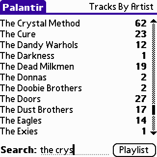
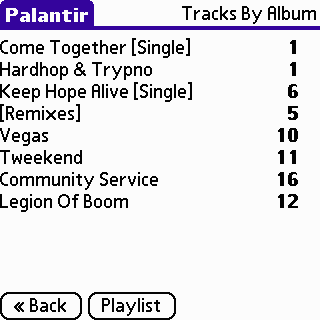
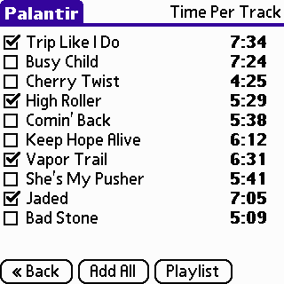
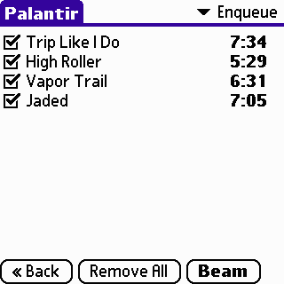
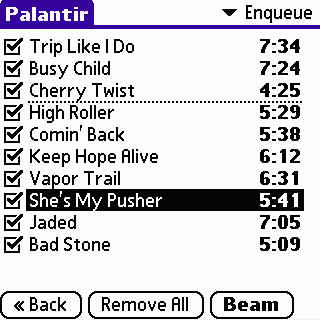
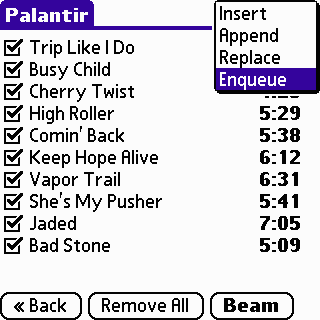
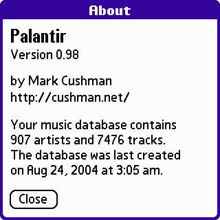
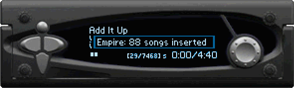
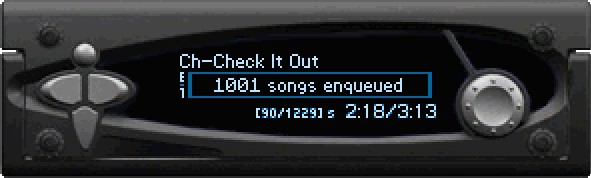
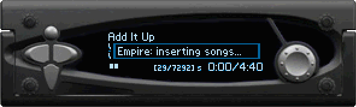

Palantir is a Palm application that allows you to create music playlists on the fly and beam them via IrDA to the Empeg car MP3 player. This manual is a reference for the Palm application Palantir, the application Empire that runs on the Empeg, and the jEmplode plugin or PDB Creator that loads the track list onto the Palm.
Palantir is a Palm application that allows you to create music playlists on the fly and beam them via IrDA to the Empeg car MP3 player.
I wrote Palantir to allow passengers in my car to create playlists and view the music I have without needing to learn how to control the Empeg. The passenger can manipulate the playlist from the comfort of their own seat, viewing the playlist data in a larger, more convenient format. If your passenger is familiar with a Palm device, they will be able to use Palantir easily.
If you have any questions that are not addressed in this manual, please post them on the Empeg BBS. Problems with your player or software can be posted in the Troubleshooting forum, and questions about the software can be asked in Programming.
The first screen shown when you run Palantir is the Artist view. This view displays all artists that have songs loaded on the Empeg, and a count of tracks by each artist.
You may scroll this view by using the scrollbar, or by using the Page Up and Page Down hardware buttons on your Palm device.
The Search functionality is used to quickly scroll to an artist. Enter the first few characters of the artist name in the Search field. As you enter each character, Palantir will scroll the Artist view to the appropriate section.
When you have found the artist you wish to select, tap the name to proceed to the Album view.
After selecting an artist, Palantir will display the Album view. This view displays albums for the selected Artist with a count of tracks by each album. The albums are sorted chronologically by the year tag.
You may scroll this view by using the scrollbar, or by using the Page Up and Page Down hardware buttons on your Palm device. When you have found the album you wish to select, tap the name to proceed to the Track view.
You can return to the Artist view by tapping the Back button, or by using the Left directional hardware button on palmOneTM devices such as the Tungsten series.
The Track view displays all tracks for the selected Album, and the length in minutes and seconds of each track. You may scroll this view by using the scrollbar, or by using the Page Up/Down hardware buttons on your Palm device.
Tap the check box beside the track name to place this track in the Playlist view. Clearing the check will remove the track from the Playlist view. You may only insert a track into the Playlist view once. To place all tracks in the selected album in the Playlist view, tap the Add All button.
You can return to the Album view by tapping the Back button, or by using the Left directional hardware button.
The Playlist view displays the selected tracks, and the length in minutes and seconds of each track. The beam mode is shown in the upper right-hand corner of the screen.
You may remove unwanted tracks from the Playlist view by clearing the check box next to the Track name.
If you wish to clear the current Playlist view, you may tap the Remove All button. You will be prompted for confirmation before the tracks are removed.
You may arrange the order of the selected tracks by dragging the tracks into the desired order. Tap and hold on a track to begin moving it. Without releasing the stylus, drag the track to the desired location. A dashed line will indicate the new position of the selected track. Release the stylus at the desired location to complete the move.
You can return to the previous view by tapping the Back button, or by using the Left directional hardware button on palmOneTM devices such as the Tungsten series.
Insert
Inserts the ordered playlist directly after the currently playing track in your Empeg playlist.
Append
Appends the ordered playlist directly after the last track on your Empeg playlist.
Replace
Replaces your Empeg playlist with the current playlist.
Enqueue
Inserts the ordered playlist after the last enqueued track in your Empeg playlist. This mode is the most useful for creating large playlists a few songs at a time.
To beam your Playlist to the Empeg, hold the Palm device so it’s IrDA port is in a direct line with the Empeg’s IrDA port (located above the rotary encoder). The effective distance for beaming varies with each Palm device. For most people the reliable distance for beaming is 2-5 inches. My Tungsten C can beam playlists at a few feet, but some Sony Clie models can only beam reliably at a few inches distance. The lens used on the Empeg and sunlight conditions may affect beaming performance also.
To begin the beam, tap the Beam button on the Playlist view, or use the Select hardware button on palmOneTM devices such as the Tungsten series.
The About screen is shown when the title bar in Palantir is tapped, or when the menu silkscreen icon is tapped.
The About screen displays the version number, the number of tracks and artists loaded on your Empeg, as well as the last update date for the Palantir database.
1. Left
The Left hardware button is a shortcut for the Back button on Palantir views. It will return you to the previous view in Palantir. This button is only available on palmOneTM devices such as the Tungsten series.
2. Page Down
This button scrolls the current view down one page.
3. Select
The Select hardware button is a shortcut for the Playlist button on Palantir views. In the Playlist view, it is a shortcut for the Beam action.
4. Page Up
This button scrolls the current view up one page.
While beaming, you may receive this message if the Palm device cannot find your Empeg and Empire. The cause may be the beam was not directed correctly at the Empeg’s IrDA port. To fix this, ensure you have the Palm device oriented correctly at the Empeg’s IrDA port, and the Palm device is at the correct distance from the Empeg. The effective distance varies with each Palm device. Some Palm devices need to be held a few inches from the IrDA port to beam reliably, while others have higher powered IR ports and can be held a few feet away. Some Sony Clie devices have poor IR transmission power, and may not find the Empeg at all.
Another reason could be that the Empire server is not running on the Empeg. Please check the Empire FAQ section for solutions to this problem.
The Palm can be used as a remote control by installing OmniRemote, a remote control application for the Palm. OmniRemote costs $25 and can be customized to send out the remote signals the Empeg can detect.
The Palm device has an IrDA transmitter/receiver, and remote signals are sent over consumer IR which is a different protocol. In order to modify Palantir to also send remote signals, code would have to be written to send consumer IR signals over the IrDA hardware, a large feat in itself. Since this code would have to access hardware registers to perform the precise timing needed for consumer IR, support for each processor type would have to be written. If open source API’s become available for consumer IR over the Palm, I will certainly integrate them into Palantir.
Palantir uses a database derived from your Empeg player database. It reads the database entries and tries to associate artist/album/track information together based upon the database entries for each. This association is case-sensitive, so tracks with artist entries marked as “Ani DiFranco” and “Ani Difranco” will result in multiple artist entries in the Artist view. The best solution for this problem is to fix your tags on the player.
Palantir uses it’s own built-in “soup” view to list your artists/albums/tracks in a fixed order. This enables Palantir’s database to be very small, something important in a handheld device. This built-in soup is the framework over which the application is built. Much re-coding would have to be done to support any other scheme, such as viewing tracks by album instead of artist/album. See this post on the Empeg BBS for information regarding the format of the .pdb file.
No. See the explanation above for the reason.
Not at this moment, but it could be possible in future releases. WiFi and Bluetooth would require external hardware to be purchased to add to the Empeg, and a serial cable would have to be connected in the car to use Palantir there.
The .pdb file size is on average 67 bytes per track. For example, a database with 5000 tracks would be 327k, well under the 2M minimum memory size of even the oldest Palm devices.
See this post on the Empeg BBS for information regarding the format of the file.
Every Palm device except the original Pilot series should work with Palantir. The minimum Palm device for running palantir runs PalmOS 3.0, has an IrDA port, and has available memory to store your music database. Even the oldest Palm devices have 2M of memory. Devices that meet these minimum criteria are the Palm III series, the Handspring Visor series, and the palmOneTM Zire series. Certainly all newer devices such as the palmOneTM Tungsten series and the Treo work well with Palantir. Some people have reported having problems with Sony Clie units and their poor IR transmission ranges, just check before you buy.
empire -w [startup wait] -f [fid threshold] -p [seconds to pause]
| −w [startup wait] | Empire must wait after it is started for the Empeg player app to finish loading before binding to the IrDA port. This is so Empire can “steal” the IrDA port back from the player application, and begin listening for signals coming from Palantir. This option is not required, and if not specified, defaults to 12 seconds. |
| −f [fid threshold] | The Empeg player app can only handle so many serial commands at the same time before crashing. This threshold is around 67 or 68 tracks at once. Empire will pause for a number of seconds after a fid threshold in order to let the player “catch up” on it’s queue. This is to enable a large amount of tracks to be sent to the Empeg at one time. This option is not required, and if not specified, defaults to 50 tracks. |
| −p [seconds to pause] | This option is the number of seconds Empire will pause after reaching a fid threshold, as in the explanation above. This option is not required, and if not specified, defaults to 3 seconds. |
The default settings will work for most people. Individuals with a large amount of tracks on their player may need to tweak these settings to get Empire to work correctly. Using the default settings, if a playlist of 142 songs is beamed for enqueue to the Empeg, Empire will enqueue the first 50 tracks, pause for 3 seconds, enqueue tracks 51-100, pause for 3 seconds, then enqueue tracks 101-142.
Empire will display a status message when you have beamed a playlist successfully. This message will show the number of songs in the playlist you have beamed. This popup message will be displayed for 5 seconds. Remote commands and the Empeg’s buttons will still be passed to the player.

If you have beamed over 99 tracks to Empire, an alternate message will be displayed:

When inserting a playlist larger than the fid threshold, you may see this message:

You should wait for the player to finish inserting tracks before skipping to the next track in your playlist. The insert function of Empire traverses the beamed playlist in reverse, inserting each in turn to achieve the desired order of tracks. If this process is interrupted, your beamed playlist may play out of order.
Playlists which are greater in length than the fid threshold will be sent to the player in batches. Empire will accept the beam request, store the tracks internally, and send them to the player in the background, allowing for normal player operation in the meantime. You may see the total track counter on your Empeg increase with each batch of tracks that Empire sends to the player.
If you can beam successfully while on AC power, but cannot beam playlists in the car or on DC power, ensure that your Hijack setting for “Serial Port Assignment” is set to “Player Uses Serial Port”. If this is set incorrectly, Empire cannot communicate with the player and your songs will not be cued.
This message is viewed when looking at the serial log. It usually means that some other program was trying to use the IrDA port, in this case the player application. Empire cannot be started until after the player app has been started.
If the player has restarted by entering and exiting the shell via the serial port, the Empeg should be rebooted to allow Empire to re-bind to the IrDA port.
If you cannot beam playlists to Empire and get this message on the serial log, adjust the number of seconds Empire sleeps before binding to the IrDA port by using the -w command line option. This may be needed if you have a large amount of tracks, or are executing other commands using Hijack’s ;@EXEC_ONCE feature after launching Empire.
At the current time, you cannot. Empire relies upon writing to the player via the serial port, and currently the only way to enable this is to allow the player full access to the serial port.
By default, this directory is the plugins directory underneath jEmplode’s home directory. If jEmplode is installed in c:\applications\jemplode, the plugins directory would be c:\applications\jemplode\plugins. If this directory does not exist, you can create it.
Typically .jar files are associated with javaw.exe which does not open a client window. You may run jEmplode with a client java window by starting jEmplode from a command line with the command:
Double click on the palntir.jar file downloaded from the downloads section. You must have a recent Java Runtime Environment (like J2SE 1.4.2) installed for this to work correctly. You may create a shortcut to this .jar file and use the included icon file to improve the aesthetics. Open the .jar file with WinZip/WinRAR to extract the included .ico icon.
Your file associations have been changed by WinZip/WinRAR. Re-associate .jar files with the java program, and it will work correctly. This is easiest done by re-installing a Java Runtime Environment. An alternate way to run the .jar file is to create a shortcut with a command of:
Extract the contents of the .jar file with WinZip or WinRAR, the .java files are included in the .jar package along with the executable .class files.